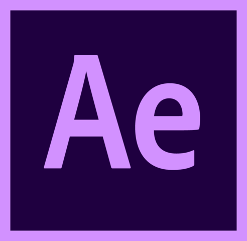

Hi!
Ik ben Isabella Smit, 20 jaar oud en ik kom uit Soest.
Ik zit in het tweede jaar van mijn studie: communicatie en multimedia design aan de Hogeschool van Amsterdam (HvA).
Naast mijn opleiding ben ik een echte team player. Ik voetbal graag samen met mijn teamgenootjes bij SO soest en werk ik met veel liefde samen met een leuk team bij Restaurant de Bosrand in Lage Vuursche.
Persoonlijke informatie
Geboortedatum
26 april 2001
Nationaliteit
Nederlandse
Hobby's
Voetbal, zeilen, fitness/yoga en creatieve activiteiten
Rijbewijs
AM | 25-10-2017
B | 11-03-2022
Persoonlijke vaardigheden
- Sociaal
- Gedisciplineerd
- Creatief
- Sportief
Speciale vaardigheden
 Adobe XD
Adobe XD Adobe Illustrator
Adobe Illustrator Adobe Premiere
Adobe Premiere- Adobe After Effects
- Pro Create (Ipad)
Nevenactiviteiten
Voetbalvereniging SO Soest
Te Soest
Zeilvereniging AVGA
Te Loosdrecht
 cv downloaden
cv downloaden